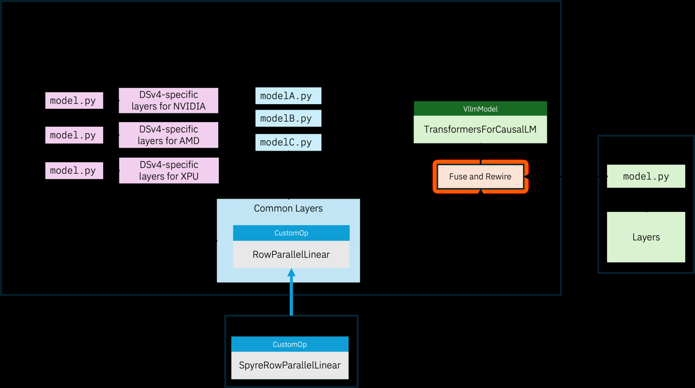
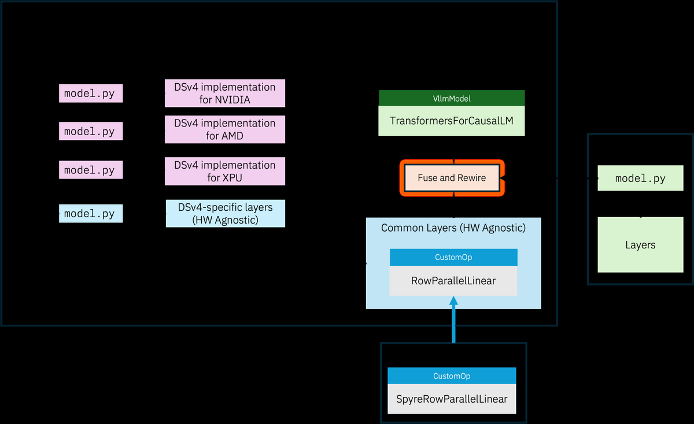
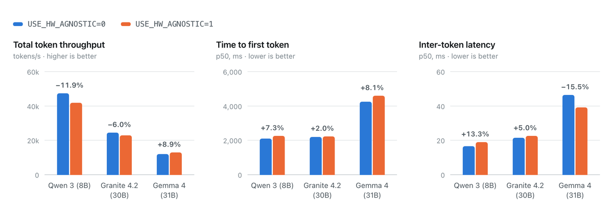

为了在最前沿硬件上拿到最优性能，vLLM 正在改动内部实现，代价是与 fullgraph torch.compile 不再兼容；依赖树外加速器、老款 GPU 或冷门模型的用户会直接受影响。为此，vLLM 引入了一组新的硬件无关（HW agnostic）层。
这组层让 vLLM 既能继续以极限速度推进前沿优化，也能照顾需要可移植性的用户。在 NVIDIA H100 上，硬件无关层的总 token 吞吐与原生实现的差距在 3.4% 以内（三个近期模型的几何平均）。
vLLM 的成功来自把自己定位成一层抽象：在多种硬件上支撑多种模型。依靠一组设计良好的抽象，加上 torch.compile 做优化与融合，项目得以让真正定义模型逻辑的代码（通常称为模型定义）保持相对简单，同时在 NVIDIA GPU、AMD GPU、Intel XPU、Google TPU、IBM Spyre、华为昇腾等硬件上取得高性能。
然而，前沿开源模型的架构正在快速分化，社区开始重新审视部分现有抽象是否还称手。模型越来越多地自带定制层与优化 kernel，连最核心的注意力机制也不例外：DeepSeek V4 与 Kimi K3 用完全不同的方案实现百万 token 上下文。要把其中一个接进 vLLM，意味着用 model_executor/layers 里的共享层把它拼出来，并让整个模型保持 fullgraph 可编译：写法上要让 Dynamo 能完整追图，每个新 kernel 都要注册成 torch library op，附带 fake 实现与正确的 mutation 标注。这是对模型开发征收的一种税，由每一个添加模型的人来付，包括那些自带模型的高级用户。
与此同时，NVIDIA Blackwell GPU 以及 GB300 NVL72 这类整机柜系统，需要精细的 kernel 工程才能用上新特性，并让计算与通信有效重叠。
就在这个过程中，Claude Code、OpenAI Codex 这类编码 agent 兴起，让生成代码变得容易得多。这些 agent 尤其擅长为特定模型在特定硬件上设计优化，但前提是它们不必担心某处改动会不会让另一个模型在另一个加速器上变差。
这些趋势叠加在一起意味着：为了在最新 GPU 硬件上拿到最优性能，社区希望拆解掉 vLLM 里的部分现有抽象。具体来说，vLLM 开始维护硬件专属的模型定义，也就是所谓的 flat 模型。flat 模型不使用 torch.compile，而是采用自定义融合以及其他模型专属、硬件专属的优化。近几个月加入 vLLM 的新前沿模型都采用这种 flat 模型定义。关键在于，模型定义所依赖的现有层与算子很可能被重构，重构后的形态与 torch.compile 根本不兼容。
这项工作对 vLLM 保持在最新 GPU 基准上的竞争力是必要的。但同样重要的是，vLLM 要继续服务那些在老款 GPU、树外（OOT）加速器这类多样硬件上服务多样模型的用户。
那么能做什么？先来看看 vLLM 今天是如何处理模型定义的。
今天 vLLM 提供三种形态的模型定义。
1 新的 flat 模型，位于 vllm/models/。
2 旧有模型，位于 vllm/model_executor/models。
3 transformers 建模后端，直接从 transformers 导入模型。
下图是当前状态的高层示意。

建模逻辑可能分散在不同位置，但大多数模型都由注意力、混合专家、线性投影、归一化与激活函数这类公共层构成。需要理解的是，上面三种情况下这些公共层仍然只在一个地方实现：情况 (1) 与 (2) 中，这些层从 vllm/model_executor/layers 显式导入；情况 (3) 中，transformers 模型会被自动融合并重接线到 vLLM 的层上。因此无论模型定义来自哪里，支撑它的大多数层用的都是同一份公共实现。
vLLM 的层实现经过多年演进，提供了两个重要特性，接下来分别展开：torch compile 支持，以及 OOT 可扩展性。
虽然 flat 模型不使用 fullgraph torch compile，但对 IBM Spyre 这类 OOT 插件来说，它仍是关键能力。Spyre 依赖 TorchDynamo 追出模型图，再由 TorchInductor 把图降级到目标硬件上能高效执行的表示。同样重要的是，torch compile 也是让 vLLM 的 transformers 后端在 NVIDIA GPU 上为 Qwen3 这类模型跑出原生速度的必要组件。
不过对 OOT 插件而言，torch compile 并不是全部。Spyre 这类加速器偶尔还需要往层里注入行为（例如自定义内存布局）才能达到最优性能。vLLM 的层为此提供两种注入机制：CustomOp（允许插件覆盖 forward 函数）与 PluggableLayer（允许插件覆盖整个层）。没有这种可扩展性，OOT 插件就得自己重新实现很多层。
除了模型定义分散在三个地方本身就够让人困惑之外，上面的设计还有一个更紧迫的问题。
flat 模型这条工作流需要改动模型定义及其底层的层实现，从而打破与 torch compile 的兼容性，并移除通过 CustomOp 进行扩展的支持。这能让他们更快地去开发硬件专属与模型专属的性能优化，但也引发了一些担忧。
首先，OOT 插件将不得不自己维护一套模型定义与层，维护负担很重。支持一个新模型要向 transformers 提 PR、向 vLLM 提 PR，然后可能还要向每一个想支持它的 OOT 插件各提一次。编码 agent 确实让这件事轻松一些，但仍然要在多个不同组织之间烧掉大量 token 预算，最终却没有实际收益。
其次，vLLM 正越来越依赖 transformers 后端来提供对老旧或冷门模型的支持。旧有模型定义正在被从 model_executor/models 中移除，其注册表条目被更新为直接指向 transformers 建模后端。如果没有可编译的层，这些模型在 GPU 上的性能会显著回退。
最后，flat 模型与层将面向前沿 GPU 做优化，并不指望支持老款 GPU 或消费级、准专业级 GPU。而 vLLM 自己的使用统计显示，相当一部分用户仍在使用这类硬件。项目也应当以能满足他们需求的方式演进。
正在 vLLM 树内构建一组硬件无关层，目标是让 vLLM 继续服务那些关心在多样硬件上运行多样模型的用户。
硬件无关层遵循以下四条设计原则：
1 可编译。 模型定义保持全图可编译；需要靠编译取得性能的加速器可以像今天一样继续使用它。
2 可扩展。 保留 vLLM 的 CustomOp 与 PluggableLayer 这类机制，确保 OOT 插件在必要时能覆盖实现。
3 隔离。 模型定义用自己那套层与算子构建，与硬件专属路径所用的层与算子相互分离、隔离。这样两个方向的开发都能快速推进而不互相拖累。
4 可移植。 尽力用原生 PyTorch 代码或 Triton、Helion 这类可移植 DSL 实现所有层与算子，让模型能在支持这些框架的所有加速器上移植。不支持的仍可在必要时依赖第 2 条。
正在推进的设计如下图所示：

随着旧有模型定义被逐步移除，模型要么以 flat 方式重新实现（例如 NVIDIA、AMD、XPU 各一份实现），要么回落到 transformers 后端。这两种情况都打算提供硬件无关支持。
对 transformers 后端，已把重接线过程改为指向位于 model_executor/hw_agnostic 的新硬件无关层，而不是 model_executor/layers 下的现有层。该支持已合入 vLLM 主分支（目前覆盖有限数量的层），在用 transformers 后端运行 vLLM 时设置 USE_HW_AGNOSTIC=1 即可启用：
USE_HW_AGNOSTIC=1 vllm serve google/gemma-4-31B --model-impl=transformers已用 Spyre 这个 OOT 插件对 Gemma 4、Qwen3、Granite 4.2 等模型验证了这条新路径。很快会开始把硬件无关模型纳入 CI，并逐步切换为在 Spyre 上服务模型的默认路径。
虽然尚未合入，计划为每个 flat 模型提供一个新的 model.py，用硬件无关层来实现该模型。跨多个 flat 模型复用的层会放在共享位置 model_executor/hw_agnostic，而模型专属的层（例如 DeepSeekV4FlashMLAAttention）放在与 model.py 相同的本地目录，但同样遵守上述四条设计原则。这方面的例子可以关注正在评审中的硬件无关 DeepSeek V4 PR。
需要强调：在 Blackwell、CDNA 4 以及之后硬件上拿到最优性能，并不是这些模型定义的目标。目标是在多样硬件上实现平台与性能的可移植，包括 OOT 加速器、老款 GPU，以及准专业级 GPU。
为了评估这条新路径在普及型 GPU 上的表现，在 NVIDIA H100 上对若干近期模型跑了一组实验，比较 transformers 后端在 USE_HW_AGNOSTIC=0 与 USE_HW_AGNOSTIC=1 下的性能，结果见图 3。
如图所示，尽管底层层与算子完全由可移植实现构成，硬件无关模型取得的性能相当接近原生模型，某些情况下甚至略好一些，而原生模型用的是 FlashAttention、CUTLASS 这类 CUDA 优化库。

把硬件无关层引入 vLLM，是为了让项目能在不拖慢前沿性能工程的前提下，继续支持多样硬件上的多样模型。这项工作对 vLLM 继续服务更广泛的开源生态至关重要。虽然已经开始合入实现这一目标的 PR，但这仍是一项进行中的工作，欢迎任何反馈。
想了解更多，可以查阅 RFC，或关注 vLLM Slack 上的 #hw-agnostic-models 频道；也可以在 vLLM.ai 或 vLLM 的 GitHub 项目页了解更多内容。
参考：https://pytorch.org/blog/hardware-agnostic-models-in-vllm/